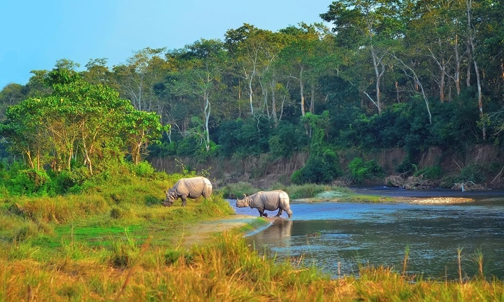
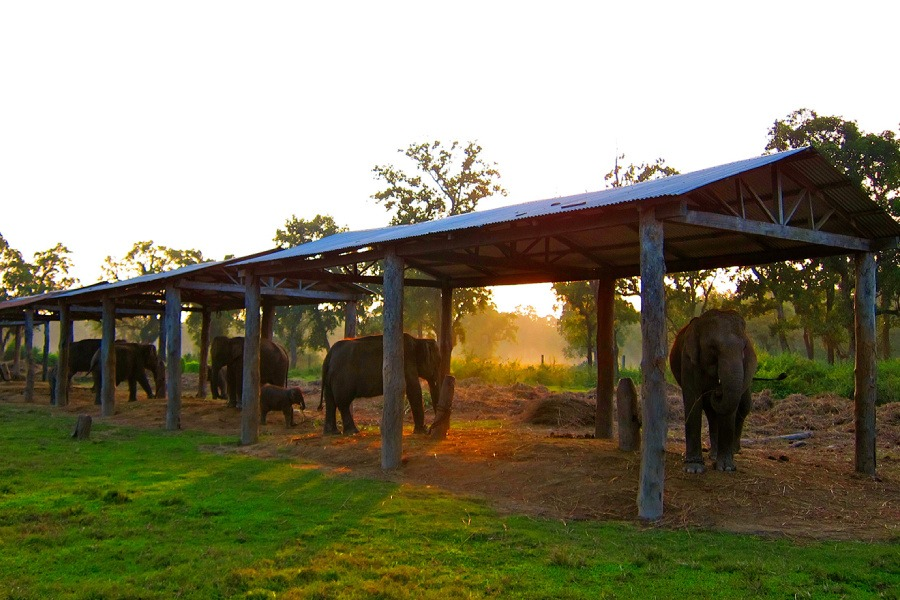
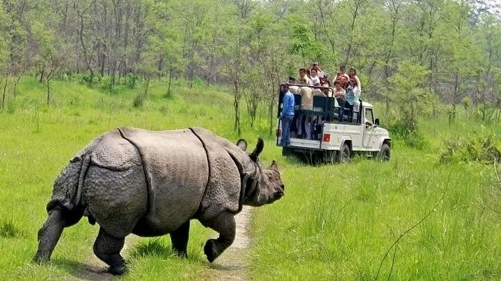
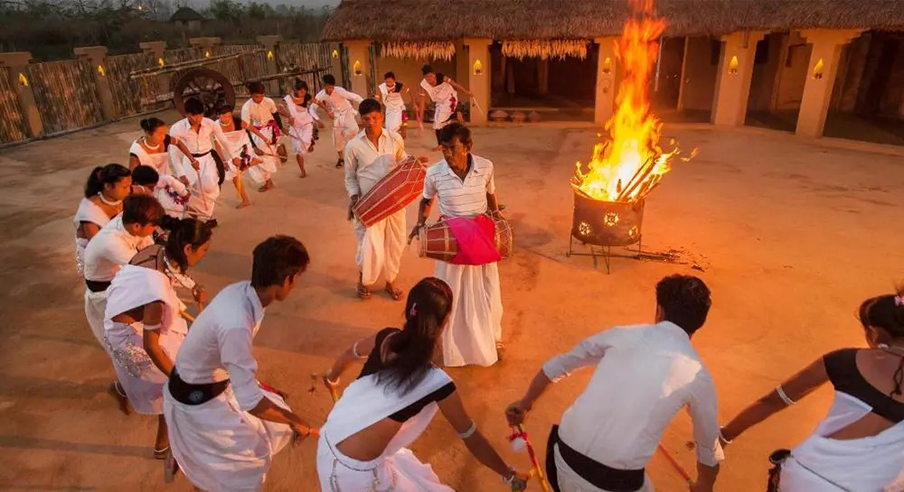
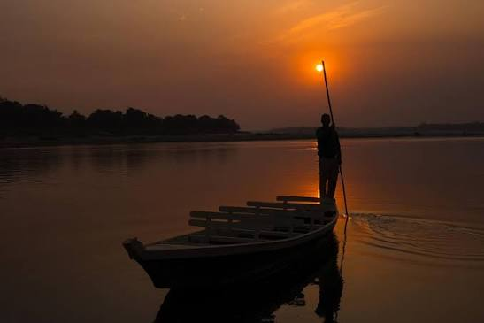
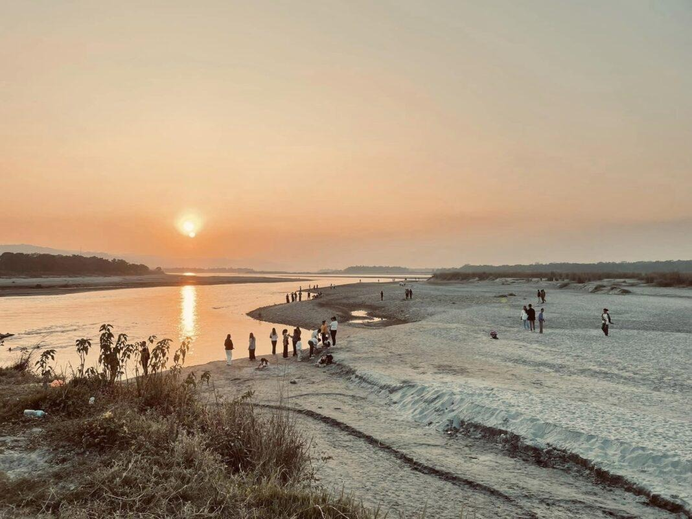
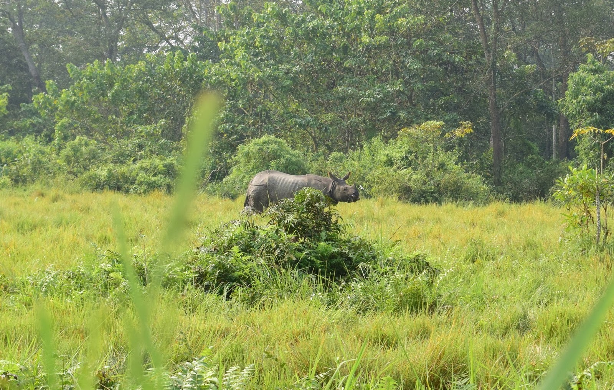
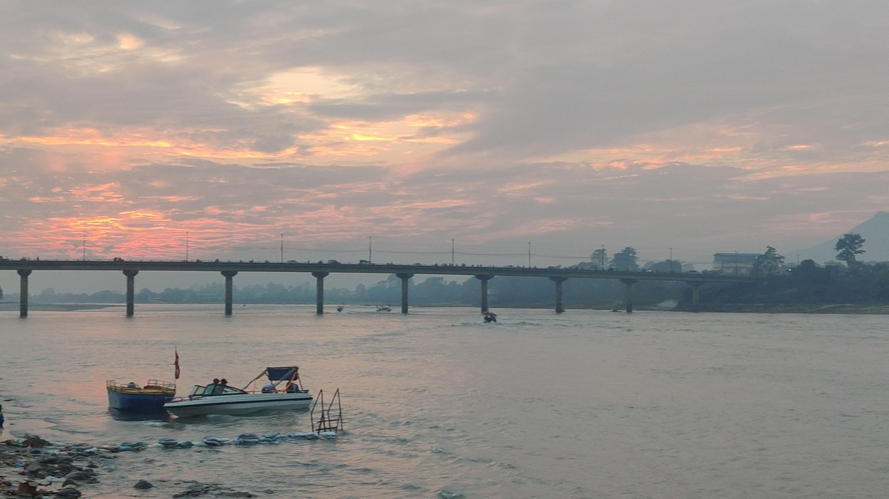
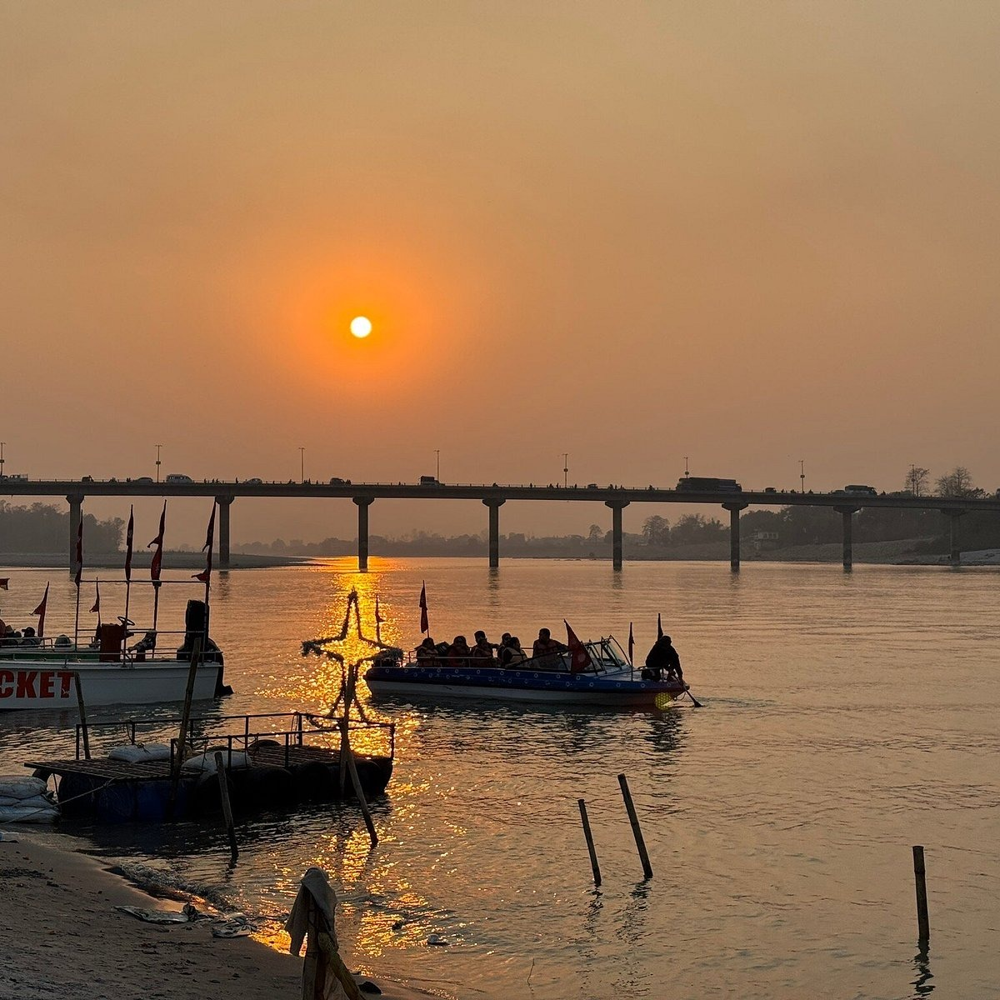
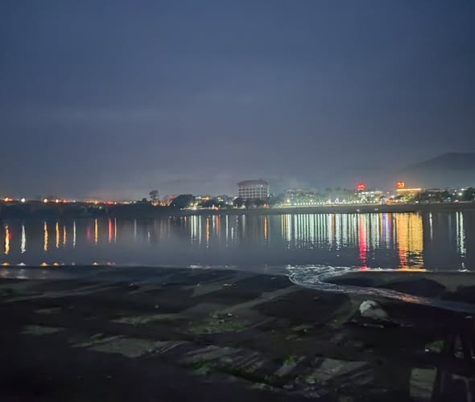

Sauraha
Sauraha is one of the most popular gateways to the wildlife experience of Chitwan. Surrounded by jungle and the Rapti River, it offers a mix of adventure, nature and local culture. Visitors can explore the Elephant Breeding Centre, go on jungle safaris by jeep or elephant, and experience canoeing through the river while observing the surrounding wildlife. The riverside is also a peaceful place to enjoy the sunset and evening atmosphere. Sauraha's experience extends beyond wildlife, with Tharu cultural dance, the Tharu Museum and local cultural experiences, while Eco Park provides another place to enjoy the natural surroundings.





Meghauli
Meghauli offers a quieter side of Chitwan, surrounded by the Rapti and Narayani rivers and a large community forest rich in flora and fauna. Golaghat, where the rivers meet, is especially popular for its beautiful sunsets and peaceful riverside views. Visitors can explore the community forest, experience jungle safaris and wildlife activities, and discover the traditional Tharu culture of the area. Meghauli also offers cultural experiences and museums that help visitors understand the local heritage alongside its natural beauty.



Narayani Riverside
The Narayani Riverside is one of Bharatpur's most enjoyable places to experience the river and the city's evening life. Visitors can relax at the riverside park, enjoy the Sea Beach model and watch the changing colors of the sky during sunset. The area also comes alive in the evening with local street food, visitors and riverside activities. Shivaghat adds a spiritual side to the experience, while Sandhya Aarati creates a peaceful atmosphere as the day comes to an end.




